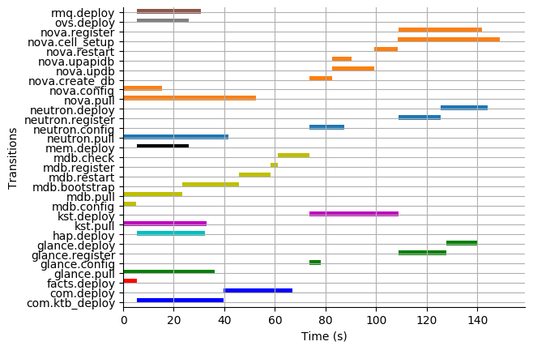
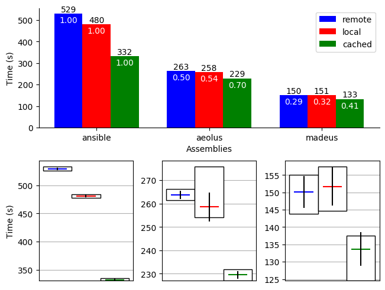
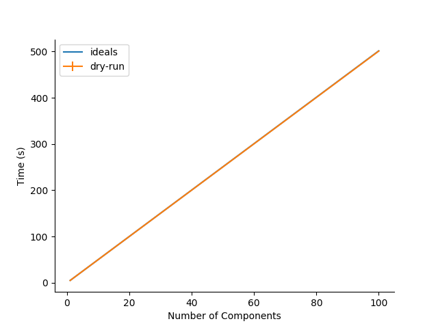

Reproducibility guide for the openstack-lab
Table of Contents
- Introduction
- Reproducibility
- Repeatability
- Open Stack Use Case
- Requirements
- Grid5000 setup
- Getting the code
- Starting a virtual environment
- Install the requirements in the virtual environment
- Machine Topology used in our experiments
- Node setup
- Mad Workflow
- Deploying Openstack on the Grid5000 nodes using kolla-ansible
- Request the resources for the benchmarks
- Launch the OpenStack benchmarks
- Behind the scenes
- Recover the benchmark results
- Restoring a previous environment
- Plot the data from the benchmarks results
- SSH Benchmarks
- Open Stack Use Case
Introduction
This page aims to offer a practical way of reproducing the experiments presented in the paper [Enhancing Separation of Concerns and Parallelism Expressivity in Distributed Software Commissionning with Madeus]. Our experiments are based on the deployment of OpenStack, and SSH benchmarks. This lab will allow the reproduction of the various graphs of the paper and the experiments themselves.
Reproducibility
Open Stack Deployment Graphs
Requirements
Python 3.7+ and git are required. First, you need to recover the code on the [[https://gitlab.inria.fr/VeRDi-project/madeus-journal][Gitlab] repository.
git clone https://gitlab.inria.fr/VeRDi-project/madeus-journal.git
You can get these on the paper repository in the results directory. There are two Open Stack deployment result directories,
ecotype and nova, named from the Grid'5000 clusters we used to run the experiments.
Plotting the curves
- Gantt charts
cd results && python graph_os_results.py creategantt -f [filename] -n [name] -nb [number]This command takes in entry the resulting json file [filename] of the times resulting from one of our experiments and allows to draw the gantt curves corresponding to it. It outputs a
svgfile as a result, with the [name] given in input and the [number] of files corresponding to the name (number of experiments). The gantt graph displays the deployment of the various transitions, with all transitions from the same component sharing the same colour. For sequential assemblies, the transitions are ordered by starting order.
- Performance comparison charts
cd results && python graph_os_results.py performcomparison -rp [result_path] -f [filename]This command takes in entry the path as [result_path] where the resulting json file from the experiments are and draw a performance comparison between the different assemblies and the remote, local and cached version of their deployment. It outputs an svg file [filename] of this chart.

Recreating tables of results
SSH Benchmark Graphs
Requirements
For the SSH benchmark result plotting we use also Python 3.7. The requirements are the click and matlplotlib library.
Plotting the curves
To plot our graphs, we used the resulting files that are in the results/ssh_bench/raw directory.
They are sorted by type of experiment, parallel, sequential, dry-run.
To plot the graphs, we use the graph_results_pyplot.py file is in the results/ssh_bench directory of the journal's repository.
The command analyze is used to create the graphs, and the options to give are the directory containing the dryrun results
-drp [directory], and the type of experiment, whether sequential or parallel with -exp [parallel|sequential]
python3 graph_results_pyplot.py analyze -drp raw/seq_no_ssh -exp sequential

Repeatability
Open Stack Use Case
Requirements
Here are the requirements for the Open Stack Use case to run:
- python 3.7+
- git
To launch the experiments on Grid 5000:
- a Grid5000 account and to setting up your ssh config appropriately (see Grid5000 setup)
All other required librairies will be installed in a virtual environment and are contained in the requirements.txt file at the root directory of the lab.
The lab code can be found on Gitlab.
Grid5000 setup
- You need to set the `~/.python-grid5000.yaml` file as explained here.
- An appropriate SSH configuration is required to access automatically the distant nodes on G5K as `root` for the sake of the deployment process. By default, the public key sent to the distant nodes is `~/.ssh/id_rsa.pub`. Be sure this key exists. (It is otherwise recommended to create a set of key specifically for grid5000).
Next, be sure the file `~/.ssh/config` contains the following parts, adapted with your own Grid 5000 username:
# Ease the access to the global access machine
Host g5k
User <your_g5k_username>
Hostname access.grid5000.fr
ForwardAgent yes
# Ease the access to site frontends (e.g. rennes.g5k)
Host *.g5k
User <your_g5k_username>
ProxyCommand ssh g5k -W "`basename %h .g5k`:%p"
ForwardAgent yes
# Ease the access to deployed nodes (e.g. paravance-42-kavlan-4.rennes.grid5000.fr)
Host *.grid5000.fr
User root
ProxyCommand ssh -A <your_g5k_username>@194.254.60.33 -W "$(basename %h):%p"
ForwardAgent yes
Getting the code
First step is recovering all the code from the public repository. It also includes the results we have obtained and used in the paper.
git clone https://gitlab.inria.fr/VeRDi-project/madeus-openstack-benchmarks.git && cd madeus-openstack-benchmarks
Because we use a submodule for the Madeus assemblies regarding openstack, you need to recover that code as well:
cd madeus-openstack && git submodule update --init
This will clone the proper assembly code in the madeus-openstack directory. The original repository is visible at the Madeus-openstack repository.
Starting a virtual environment
It is recommended to run experiments in a virtual environment to keep your python installation clean.
virtualenv -p python3 venv
source venv/bin/activate
If your Grid5000 ssh key has a passphrase, you can use
eval "$(ssh-agent -s)" && ssh-add
before starting the experiments to add the key to your ssh agent and not have to input the passphrase several times over the deployment.
Install the requirements in the virtual environment
The makefile allows for the installation of the requirements, you can use:
make install_deps
to launch the installation of the various libraries we use for these experiments. We use EnOSlib, that allows to organize our experiment workflow and configure our Grid5000 setup. We also use Execo for the benchmark launches with the various experiment scenarios. We use Orca for the curve plotting.
Machine Topology used in our experiments
To makes these experiments we have used two different topologies depending on the use of a local registry for the openstack images or a shared / remote registry.
Node setup
The details of the machine reservation on grid5000 are set in the reservation.yaml file where they can be updated to fit specific needs.
--- # ############################################### # # Grid'5000 reservation parameters # # ############################################### # g5k: # reservation: "2018-03-12 19:00:01" walltime: "04:00:00" job_name: mad-openstack env_name: debian10-x64-nfs #key: "~/.ssh/id_grid5k.pub" resources: machines: - roles: - mad-node cluster: paravance node: 1 primary_network: int-net - roles: - disco/registry cluster: paravance node: 1 primary_network: int-net - roles: - openstack - control cluster: paravance node: 1 primary_network: int-net - roles: - openstack - compute cluster: paravance node: 1 primary_network: int-net - roles: - openstack - network node: 1 cluster: paravance primary_network: int-net networks: - id: int-net roles: - network_interface type: kavlan site: rennes
This reservation requests five machines, all from the paravance cluster, and all on the same network that is defined as int-net in the last part of this reservation section. We defined specific roles for our machines:
- The mad-node is the node responsible for launching the assemblies for the deployment of openstack on the openstack nodes
- The openstack are the nodes where openstack will be deployed and in our experiment they each have one specific role (compute, control and network), according to openstack deployment usages
- The disco/registry is the node that will hold the docker image repository, for the cases when the repository is local, as opposed to remote or cached.
Mad Workflow
A typical experiment using Mad is the sequence of several phases:
- deploy
- Mad will read the configuration file, get machines from the resource provider and will prepare the next phase
- install-os
- Mad will deploy OpenStack on the machines. This phase relies on Kolla deployment.
- backup
- Mad will backup metrics gathered, logs and configuration files from the experiment.
- destroy
- Mad will release the resources.
The README.md file contains more information about the various commands available. This document focuses on offering an easier way to reproduce the experiments presented in the paper and will not go in details over the various options. The python mad.py command has a --help flag that gives out information over the commands available.
Deploying Openstack on the Grid5000 nodes using kolla-ansible
The mad tool features commands to launch a deployment of openstack on g5k nodes with the use of the deploy, and install-os commands.
python mad-enoslib.py deploy --provider g5k --registry python mad-enoslib.py install-os python mad-enoslib.py destroy--hard
The destroy--hard command is there to clean up the nodes once the deployment has been done.
Request the resources for the benchmarks
python mad-enoslib.py deploy -c reservation.yaml -p g5k --bootstrap
where the -c option indicates our reservation file, -p indicates the requested provier, and the --bootstrap flag indicates that it will populate the inventory with the proper information about the machines reserved and transfer all necessary environment values and files to the different nodes.
This step will issue the reservation of the machines to the chosen Grid5000 cluster, and once the machines have been deployed it will populate all the required files for kolla in a directory that will be linked symbolically to the current directory. These configuration files are necessary for the OpenStack deployment.
Launch the OpenStack benchmarks
Once the nodes have been reserved, to reproduce the benchmarks, you can specify which test to run by inputing it in the command as for example:
python mad-enoslib.py bench -c reservation.yaml --provider g5k --test all
launches the scenario defined in the reservation.yaml file as all.
# ############################################### # # Experiment Scenarios # # ############################################### # all: # Here are defined the parameters related to the Execo bench engine: params: test_type: ["m_ansible", "madeus", "m_aeolus", "m_sequential"] registry: ["cached", "local", "remote"] # Here are defined global parameters for our benchmarks: iterations: 10 test: # Here are defined the parameters related to the Execo bench engine: params: test_type: ["m_ansible", "m_aeolus", "madeus"] registry: ["cached", "local", "remote"] # Here are defined global parameters for our benchmarks: iterations: 1 single: # Here are defined the parameters related to the Execo bench engine: params: test_type: ["madeus"] registry: ["local"] # Here are defined global parameters for our benchmarks: iterations: 1
Each benchmark scenario is defined by a name such as all, test, or single in our file.
Our parameters are the numbers of iterations for each test that we want to go through and the list of the different assemblies we want to try (such as seq_1t, dag_2t, dag_nt4).
The -p and -c options are similar to the launch of the reservation. The --test option defines which tests will be launched from the different scenarios described in the reservation.yaml file.
It is posible to define other scenarios following the examples already present in the reservation.yaml file.
Behind the scenes
The call to python mad.py bench will run a tmux session named mad on the remote node with the concerto-node role that can be accessed through
ssh [concerto-node-adress]
and
tmux attach -t mad
to observe the deployment process from the nodes.
Recover the benchmark results
To recover the results from the previously launched benchmarks, just run the following command:
python mad-enoslib.py backup
The backup command allows to recover the environment configuration from the experiment and the resulting files that are on the concerto node, such as the kolla logs and the madeus directory.
The resulting files are in the backups directory, under the timestamp of the experiment start.
The backup command can also be used to save an environment and benchmark configuration if the reservation is reaching its limits.
Restoring a previous environment
The restore option of deploy allows to restore the environment configuration and to restart the benchmark from where it was stopped
python mad-enoslib.py deploy -c reservation.yaml -b --restore backup_dir
Plot the data from the benchmarks results
Once the resulting files have been recovered through the backup command, the use of analyze will allow for the creation of time charts, by replacing Timestamp by the timestamp of the experiment that is the name of the backup directory just created.
python mad-enoslib.py analyze -b backups/Timestamp
This will go through the results and plot the charts of the experiment times.
SSH Benchmarks
Requirements
Here are the requirements for the SSH benchmarks:
- a Grid5000 account and a proper set up as described in Grid5000 Setup
Accessing a Grid5000 frontend
These benchmarks will be launched from a Grid5000 frontend:
ssh access.grid5000.fr
In our configuration we make reservations on the nantes site, so we will access the nantes frontend:
ssh nantes
If your Grid5000 configuration is properly setup, you should now have a shell starting with [your_g5k_login@fnantes].
Getting the code
The SSH benchmarks code is contained in the journal repository:
git clone https://gitlab.inria.fr/VeRDi-project/madeus-journal.git
To launch the benchmarks, you need to have concerto also, that you can as before, get from the gitlab repository
git clone https://gitlab.inria.fr/VeRDi-project/concerto.git
Installing the requirements
We use EnOSlib to set up the machine reservations on grid5000 and launch the experiments
pip3 install enoslib
The concerto directory needs to be added to the python path:
cd ~/concerto && source source_dir.sh
Launching the benchmarks
- Sequential tests
The sequential tests are defined in the
reserve_and_test.pyfile in thetests/sequential_test/directory. The configuration is in the conf.yaml file of the directory.g5k: # reservation: "2018-03-12 19:00:01" walltime: "01:00:00" dhcp: true job_name: concerto_ssh_scalability env_name: debian10-x64-base resources: machines: - roles: - concerto cluster: ecotype nodes: 1 primary_network: n1 secondary_networks: [] networks: - id: n1 roles: - control_network - database_network type: prod site: nantes
If your want to test on other sites or with other clusters you can change the values in this file to that purpose.
- Resulting directory
The results are saved in a directory that is defined by default as `exp` but can be changed by modifying the `reserve_and_test.py` file, replacing the main l.50 by this:
if __name__ == '__main__': logging.basicConfig(level=logging.DEBUG) perform_experiment( list_chain_length=[1, 5, 25, 100], working_directory='directory_name', nb_repeats=5 )
To launch the experiments for sequential ssh test you can use the following command:
python3 benchmarks/sequential_test/reserve_and_test.py
- Resulting directory
- Parallel tests
The parallel tests are defined in the
reserve_and_test.pyfile in thetest/sequential_test/directory. The configuration is in the conf.yaml file of the directoryg5k: # reservation: "2018-03-12 19:00:01" walltime: "01:00:00" dhcp: true job_name: concerto_ssh_scalability env_name: debian10-x64-base resources: machines: - roles: - remote cluster: ecotype nodes: 10 # will be changed by reserve_and_test primary_network: n1 secondary_networks: [] - roles: - concerto cluster: ecotype nodes: 1 primary_network: n1 secondary_networks: [] networks: - id: n1 roles: - control_network - database_network type: prod site: nantes
The results are saved by default in two directory, `exp_ssh` for the run with ssh experiment and `exp_no_ssh` for the dry run experiment. These directories can be changed in the `reserve_and_test.py` file, by changing the main l.71 and l.79:
if __name__ == '__main__': logging.basicConfig(level=logging.DEBUG) perform_experiment( list_nb_components=[1, 5, 10, 15, 20], list_nb_parallel_transitions=[1, 5, 10, 20], sleep_time=10, nb_repeats=5, working_directory="exp_ssh", ssh_test=True ) perform_experiment( list_nb_components=[1, 5, 10, 15, 20, 50], list_nb_parallel_transitions=[1, 5, 10, 20], sleep_time=1, nb_repeats=5, working_directory="exp_no_ssh", ssh_test=False )
You can change the directory here should you want to.
python3 benchmarks/parallel_test/reserve_and_test.py
Recover the benchmark results
Once the benchmarks are done, the results are in the directories previously presented in Launching the benchmarks. You can make an archive out of the results, for example from the `exp` directory.
tar -czvf results.tar.gz exp
To recover your archive, you can then either use your public access (through identification) of Grid'5000 to download it:
mv results.tar.gz ~/public
which will allow you to access the archive on https://api.grid5000.fr/sid/sites/[siteUsed]/public/[grid5000Login]/.